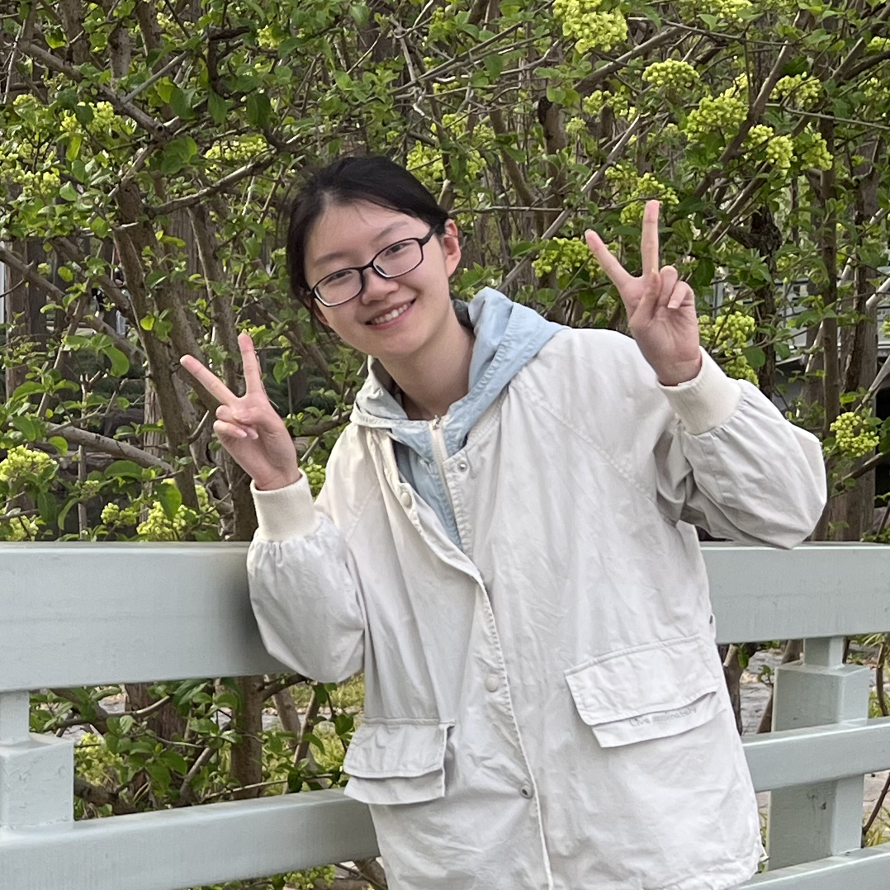

{% endif %}
{% endif %}
{{paper.authors}}.
{{paper.conference}}
|  |
Ziwei TangUndergraduate Student.Beijing University of Posts and Telecommunications [tzw@bupt.edu.cn] [cv] |
I am a senior student at Beijing University of Posts and Telecommunications, majoring in Computer Science and Technology. My research interests are Nature Language Processing, Large Language Models and multi-agent systems. I am currently working on evaluating LLMs' programming ability in software engineering tasks and exploring the potential of multi-agent coding systems.
These are some of my previous work.
|
{% if paper.image %}
{% endif %}
|
{{paper.title}}
{{paper.authors}}. {{paper.conference}} |